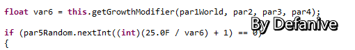
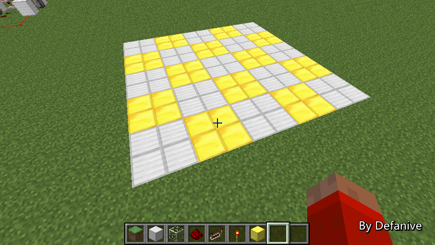

首页
上一页
257
258
259
260
261
262
262
263
264
265
266
267
下一页
末页
defanive2
无尽黑夜
14
最后一步也是非常关键的一步
var16 || var14 && var 15
若这个表达式为true的话
整体的生长速度减半
var14、var15、var16就是之前的同种瓜苗判断
||是逻辑或运算，&&是逻辑与运算
这个表达式与各个参数的关系可以用布尔运算器试一下
——来自 MCLive
19602楼
2013-07-28 12:58
defanive2
无尽黑夜
14
那么接下来我们就可以对这两种耕田的gm进行一次计算了
左边的耕田取其中一个中间的瓜苗
周围有8个湿润的耕田，生长速度加8x3/4
下方湿润耕田，生长速度加3
于是现在的生长速度为1+8x3/4+3=10
var14=T，var15=T，var16=T，于是生长速度减半
最后的生长速度为10/2=5
——来自 MCLive
19604楼
2013-07-28 13:03
defanive2
无尽黑夜
14
接下来看右边的耕田
周围有5个湿润的耕田，增加生长速度5*3/4
瓜苗耕田湿润，增加生长速度3
现在的生长速度为1+5*3/4+3=7.75
var14=T，var15=F，var16=F，对生长速度无影响
因此最终的生长速度为7.75
——来自 MCLive
19606楼
2013-07-28 13:06
defanive2
无尽黑夜
14
可以看到，右边的生长速度7.75大于左边的生长速度5
这个生长速度到底有多大影响呢，我们回到random tick的代码上
左边的耕田gm为5，因此随机数范围为0-5，抽中0的几率为1/6
也就是说平均要6次random tick才能进行一次生长
8次生长后，也就是说平均要54.6分钟才长一个西瓜
右边的耕田gm为7.75，因此随机数范围为0-3，抽中0的几率为1/4
也就是说平均要4次random tick才能进行一次生长
8次生长后，也就是说平均要36.4分钟才长一个西瓜
——来自 MCLive

19608楼
2013-07-28 13:11
defanive2
无尽黑夜
14
可以看到，尽管是一点点小小的布置差异
导致了左边54分钟长一个西瓜
而右边36分钟就长一个西瓜了
其实获取生长速度的算法看起来很复杂，实际上很简单
分成两部分：养分供给，养分竞争
养分供给就是耕田/湿润耕田提供的生长加速
而养分竞争则是由于周围同种作物导致生长减速
当然，这只是一个粗略的解释
具体按照上面的代码流程计算一次就能体验到这个算法的意义
——来自 MCLive
19609楼
2013-07-28 13:14
defanive2
无尽黑夜
14
刚刚讲解完了上面两种排布的差异
结果是仅仅调换一下瓜苗位置都可造成巨大的速度差异
接下来，理解了上面的生长速度系统
左边和右边两种耕田布置方法
哪一种产生西瓜的速度更快呢？
如果想进行自我挑战的同学
可以尝试先不看接下来的直播
把右边的耕田按照上面的代码算一次
看看自己的预测是否正确
——来自 MCLive
19610楼
2013-07-28 13:19
defanive2
无尽黑夜
14
这种布置与上一种布置最大的差异就在于水换成了小麦田
那么我们选取中间的瓜苗进行计算
周围有8个湿润的耕田，增加生长速度8*3/4
瓜苗的耕田湿润，增加生长速度3
那么现在的生长速度就是1+8*3/4+3=10
var14=T，var15=F，var16=F，不影响生长速度
因此最终的生长速度就是10
——来自 MCLive
19612楼
2013-07-28 13:23
defanive2
无尽黑夜
14
左边的生长速度是7.75，而右边的生长速度为10
右边来说，平均需要27.3分钟才长一个西瓜
而左边则需要36分钟，因此右边比较快
形象的来说，湿润的耕田给瓜苗提供了额外的“养分”
因此生长速度更快了
——来自 MCLive
19613楼
2013-07-28 13:26
defanive2
无尽黑夜
14
在很久以前，西瓜只有在耕田上才会长出
而现在已经更新为泥土/耕田/草地任意之一即可
那么现在大家都习惯于不再耕长西瓜的田了
但是，经过刚才的计算，相信大家也了解到了耕田的重要性
那么，左边的生长速度为7.75，平均36分钟出一个西瓜
右边的生长速度，仅仅由于偷懒不耕田，会降低多少呢？
再次，想挑战自己的同学
可以尝试不看接下来的直播，先自己算一次
——来自 MCLive
19614楼
2013-07-28 13:31
defanive2
无尽黑夜
14
那让我们来计算右边的生长速度吧
周围有2个湿润的耕田，增加生长速度2*3/4
瓜苗的耕田湿润，增加生长速度3
现在的生长速度为1+2*3/4+3=5.5
同样的var14 15 16都没有影响生长速度
那么平均下来就需要45.5分钟才长一个西瓜
——来自 MCLive
19618楼
2013-07-28 13:40
defanive2
无尽黑夜
14
所以说，左边36分钟出一个西瓜，右边45分钟出一个
也就是说，多花1分钟耕一下田，可以节省10分钟的等待时间
不过当然啦，自动化之后也不在乎这10分钟的时间了
挂机即可
不过这里只是对gm算法的一个利用而已
个人感觉mojang对这个gm算法的设计非常的好
鼓励玩家积极动手
——来自 MCLive
19622楼
2013-07-28 13:47
defanive2
无尽黑夜
14
讲完西瓜了，我们也向小麦看看吧
小麦与西瓜有同样的生长速度系统，完全一样的算法
很早以前直播时就提到过小麦田的生长速度和面积利用率的取舍
今天终于有答案了
具体的计算就不进行演示了，相信经过这么多例子大家都会了
如果小麦田全部排满小麦的话，生长速度为5，平均54分钟成熟
如果如此只排44个小麦的话，生长速度为10，平均27分钟成熟
也就是说，全部排满小麦，54分钟可以成熟1次，收获80个小麦
只排44个小麦的话，54分钟成熟2次，收获88个小麦
当然啦，这样的确提高了效率
但是仅仅多了8个小麦而已，不过却要多收割一次
——来自 MCLive
19625楼
2013-07-28 13:59
defanive2
无尽黑夜
14
然而对于生长速度算法的运用并不在这里
当有2种作物时，常用的排布是2片9x9的田分别种上2种作物
土豆，萝卜也是完全相同的生长速度系统
2片紧凑田的结果就是54分钟内需要收割1次，收获80+80
而2片如图的间隔交错田的结果是54分钟内需要收割2次
但是却可以收获160+160，产量直接翻倍
——来自 MCLive
19626楼
2013-07-28 14:05
defanive2
无尽黑夜
14
多种作物交错耕作的思想同样也可以运用到瓜田
在瓜田中这种种植，由于瓜苗不是同种
因此不会导致var14 15 16产生减慢生长速度的效果
然而瓜苗又可以同时受到周围8个耕田的养分
因此达到了最高10的生长速度，27分钟可以长出一个瓜苗
——来自 MCLive
19628楼
2013-07-28 14:13
defanive2
无尽黑夜
14
好吧今天直播就到这里了
今天虽然以比较沉闷的看代码和理论计算为直播开头
但是最终却以不小的收获结束这次直播
如果说在这次直播里面学到了农业上的一些可以改进的地方
就赶快开启自己的世界/服务器动手改造吧！
今天直播的内容是我和繁华一起的研究结果
自然也感谢繁华陪我逗B了一个下午的java代码
————————————————————————————————
上一期直播找茬的答案是，2种蘑菇块的数量都从4个变成了1个
实际上是由于箱子里东西都是一个，就蘑菇块有4个
于是在截图前强迫症挖掉了。。
如果没看错的话，
@瓶子中的带鱼
是第一个猜对的！
今天的找茬也在图里面了，并不难哦！
不管怎么说，先睡觉去了，大家晚安
——来自 MCLive
19630楼
2013-07-28 14:21
defanive2
无尽黑夜
14
UHC S2E4也发布了！
S2的更新速度可能稍微慢，不过依然感谢大家的持续关注
http://tieba.baidu.com/p/2455325226
第四季的赛事已经提上日程了，而且这次会有更多的喵服成员参加！
目测可以有4-5只3人队伍，比赛会更加激烈
当然也有可能尝试新的分组人数，例如2人或4人
总之值得期待，我也很想玩UHC了！
19729楼
2013-07-29 23:49
defanive2
无尽黑夜
14
最近喵服全员皮肤都穿上了皮卡丘的外套！
相信大家已经在19447L 19448L 19558L 19559L看到了
这套皮肤会传一段时间，到UHC的时候再换掉
19746楼
2013-07-31 11:44
defanive2
无尽黑夜
14
然后在 喵微博（meowcraft点net） 上看到了一张绘画
顿时就惊呆了！
这张图是
@罪雨潇音
给我画的，非常帅气漂亮！
再次感谢，非常棒的水准！赞x65536！
19748楼
2013-07-31 11:48
defanive2
无尽黑夜
14
UHC S2E5 发布了
http://tieba.baidu.com/p/2455325226
发布进程加快了，S2将会在周末结束前完结
为什么呢，是因为 UHC 第四季 就快要来了！
目前计划是在周日进行比赛，如果没问题的话下周中就能看到S4E1了
当然这只是计划而已，还得看人来得齐不齐
PS 明天是个特别的日子
19836楼
2013-08-01 14:40
defanive2
无尽黑夜
14
直播终于一周年
20355楼
2013-08-02 13:54
defanive2
无尽黑夜
14
直播终于一周年了！
感谢大家一直以来的支持，能够一直直播到今天也是很意想不到的事情！
下面是我的周年庆生存世界的游览视频，欢迎围观！
http://tieba.baidu.com/p/2503617211
直播贴，生日快乐！
20365楼
2013-08-02 13:56
defanive2
无尽黑夜
14
非常感谢大家周年庆对我的回复和支持！
积累了好多回复，暂时还没办法一一答复大家
但是估计是回复量最高的一天了，感谢大家的支持！
UHC S2E6 也发了，欢迎继续围观！
http://tieba.baidu.com/p/2455325226
20494楼
2013-08-03 09:49
defanive2
无尽黑夜
14
最近U2B在火什么呢，chunk loader
大家也知道一个chunk在玩家靠近会被加载
而远离一个chunk之后这个chunk就会被卸载
所谓的chunk loader就是可控的chunk强制加载器
1.6更新后，原版中最先实现chunk loader的应该是SimplySarc
Panda4994在此之后做了一个非常详细的讲解
所以我在这里只是转播一下
——来自 MCLive

20505楼
2013-08-03 10:23
defanive2
无尽黑夜
14
在此用2x2的格子代表一个chunk
那么假如这5x5个chunk暂时都没被加载的话
也就是说玩家离这些chunk很远
此时如果用拉杆从已经加载的chunk中引一条红石线路过去
任何类型的电路或其他机械，只要产生了跨越chunk边界的更新
那么这个chunk就会被加载到内存中
如图被红石线跨越的3个chunk就被内存加载了
这3个chunk的确被加载了，但并不是完全存活
很多游戏机制都并不能正常执行
我个人喜欢把这些chunk叫做 inactive loaded chunk
——来自 MCLive
20509楼
2013-08-03 10:30
defanive2
无尽黑夜
14
如果一个inactive loaded chunk周围的5x5个chunk都是被加载了的话
那么这个chunk就会变成彻底的加载了
个人喜欢叫成 active loaded chunk，因为这个chunk是实际活动的
例如途中正中心的铁块就是active loaded chunk
——来自 MCLive
20510楼
2013-08-03 10:33
defanive2
无尽黑夜
14
那么active和inactive有什么区别呢
active loaded chunk其实就是最常见的在内存中的活动区块
例如玩家周围的15x15个chunk都是active loaded chunks
spawn chunks周围的是active loaded chunks
但是注意的是，这些active loaded chunks周围还有一圈inactive loaded chunks
实际上游戏的机制是所有的chunk都会被inactive loaded
然后根据周围chunk的状态来选择是否变成active loaded
简单的来说，游戏只能inactive的加载chunk
只不过chunk可以从inactive变成active
——来自 MCLive
20512楼
2013-08-03 10:38
defanive2
无尽黑夜
14
说了这么多废话，inactive和active有什么区别呢
这些又和完全没有被加载的chunk有什么区别呢
只要一个chunk被加载了，那么方块更新就可以正常运作
例如在被加载的chunk里面倒一桶水，那么水会扩散
inactive的chunk里面tile entity和entity并不会正常工作
因此熔炉不会烧物品，矿车不会移动，怪物不会despawn
而active的chunk里面以上都会正常执行
——来自 MCLive
20513楼
2013-08-03 10:43
defanive2
无尽黑夜
14
那么一个chunk又是怎么被卸载的呢
一个chunk被卸载的唯一方式就是玩家离开这个chunk太远
从一个chunk跑远了，从chunk传送到其他世界，在chunk中死亡
都会导致这个chunk被卸载
PS 除非是spawn chunks
因为spawn chunks总会在内存中
——来自 MCLive
20514楼
2013-08-03 10:46
defanive2
无尽黑夜
14
相信大家对chunk loader的应用一定有不少疯狂的想法了
例如最常见的一个问题，就是人跑远了之后熔炉就不再工作了
使用chunk loader就可以保持这个熔炉正常工作
由于熔炉是tile entity，因此我们要让这个chunk作为active loaded
因此我们只需要在让玩家彻底离开熔炉周围的5x5个chunk之后
使用任何一类更新让5x5的chunk被inactive loaded
那么熔炉这个chunk就会变成active loaded了
熔炉就能够正常工作了
——来自 MCLive
20520楼
2013-08-03 10:51
defanive2
无尽黑夜
14
另外一个应用就是长距离矿车的运行
JL2579对此做了一个视频
矿车也是entity，运行距离太远的话到达了未加载chunk中就不再行驶了
那么要做到让矿车不断运动的话
只需要在矿车进入未加载chunk前
把未加载chunk周围的5x5个chunk都inactive loaded
那么就可以保证矿车持续运行了
——来自 MCLive
20522楼
2013-08-03 10:55
首页
上一页
257
258
259
260
261
262
262
263
264
265
266
267
下一页
末页